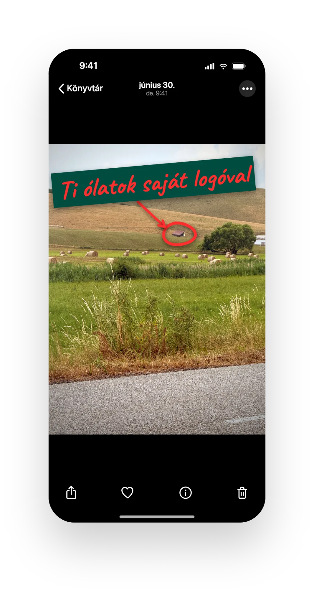
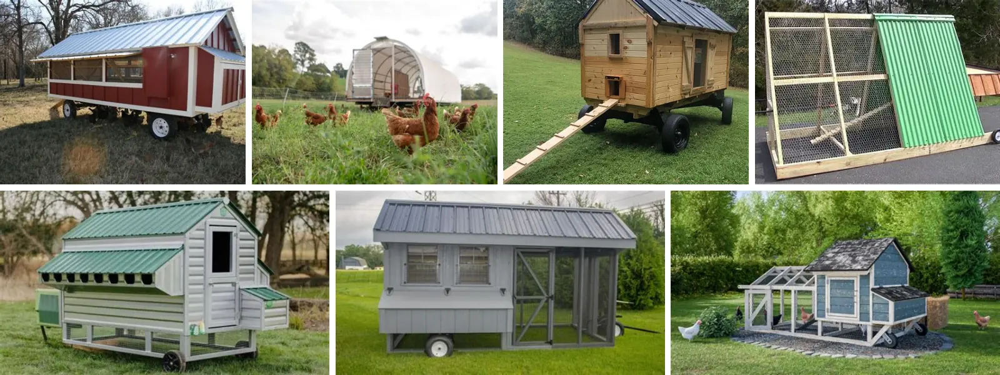

Adj a dolgozóidnak valamit, amiről tényleg beszélnek.
Leköttök egy saját céges tyúkcsapatot a Remény Farmon. Mi gondozzuk az állatokat, kéthetente szállítjuk a tojást az irodába, ti pedig egész évben követhető farmtörténetet, dolgozói élményt és kommunikálható márkaanyagot kaptok.
- Kétheti tojásnap
- Logózott mobil ól
- Élő webcam
- Dolgozói tyúkkódok
- Opcionális tartalomgyártás
Nem stock CSR. Nem sablon juttatás. Szabadtartás, mozgó ól, élő legelő – egy működő farmon.
vagy nézd meg előbb a csomagokat →
Limitált első partnerkör. Élő állatokkal, lekötött ólkapacitással és kétheti szállítással dolgozunk, ezért egyszerre csak néhány céggel tudunk indulni.
 Mobil ól a legelőn · a ti logótokkal
Mobil ól a legelőn · a ti logótokkal
- Szabadtartású céges tyúkcsapat 12 hónapra
- Kétheti tojásnap az irodában
- Logózott mobil ól a legelőn + élő webcam
- Opcionális média- és tartalomgyártás
Neked mit kell ebből házon belül bizonyítanod?
Egy program, három céges cél: employer branding, márkaépítés vagy ESG. Válasszátok ki, nálatok melyik a legerősebb.
Egy juttatás, amiről hétfőn is beszélnek
- A kolléga digitálisan örökbe fogad egy tyúkot – névvel, fotóval, történettel; nem a sokadik utalvány.
- Kétheti tojásnap az irodában (30-as tálcák), saját tartóval hazavihető – családi reggeli sztori.
- Toborzás- és onboarding-tartalom, ami magától termelődik: farmnap-fotók, webcam-pillanatok, valódi employer branding anyag.
Egy kampány, ahol nem kell kitalálni a történetet.
- A logózott mobil ól abban a tartalomban jelenik meg, amit a Remény Farm közönsége már néz: nem banner, hanem valódi farmjelenet.
- Saját, felhasználható anyag készülhet a ti csatornáitokra is: forgatott videó, fotó, belső kommunikáció és brand safety jóváhagyási kör, külön médiaajánlat alapján.
- Tájba épített reklámérték: az ól látszik az útról, a webcamen, farmnapon és videók hátterében, minden héten új legelőn.
Mért farmmunka, nem zöld állítás
- Regeneratív, a Bio Garancia Kft. által tanúsított biogazdaság: szabadtartású, mobil ólas legeltetés, faültetés a Ligetben és EOV-alapú éves ökológiai monitorozás.
- Mérési háttérrel dokumentált változás: kutatói együttműködés, éves farmriport, fotó/videó a saját coopotokról és hivatkozható EOV eredmények.
- Nem karbonkredit, nem offset, nem önálló ESG-megfelelési eszköz. Egy másik farmműködés, aminek a terepi munkája és mérése bemutatható.
Mind a három igaz rátok? A legtöbb cég így van vele.
- Employer branding, márkatörténet és ESG egy programban – a Team Coop pont erre a háromra van kitalálva.
- Nem kell most eldöntenetek a szöget: a létszám és a céljaitok alapján együtt megnézzük, melyik a legerősebb nálatok.
- Egy döntés, három részleg nyer vele.
29 hektár mért, regenerálódó táj 500 juh, 80 szarvasmarha 13 000 tojás / hét coop-kapacitás Bükk-vidék regeneratív szabadtartás mobil ólas legeltetés gyógynövényes legelő BIO · Bio Garancia Kft.
Bejelentett · nyomon követhető · dokumentált hűtési lánc. Minden szállítás engedélyekkel és élelmiszerbiztonsági dokumentációval megy; a tojás a saját, lekötött céges tyúkcsapatotokból érkezik, kéthetente, megbízható ritmusban.

Saját céges tyúkcsapat, ami nem a prezentációban él, hanem a farmon.
A cég 12 hónapra leköt egy tyúkcsapatot a Remény Farmon. A mobil ólon – ami a legelőn vándorol – megjelenik a logó, az irodában nézhető az élő webcam, kéthetente megérkeznek a tojások, a dolgozók pedig saját kóddal digitálisan örökbe fogadhatnak egy-egy tyúkot – saját fotóval, aktivitással és történettel, miközben a friss tojás az egész csapathoz megérkezik.

Miért működik céges programként?
- Kézzelfogható dolgozói juttatás: a tojás tényleg megérkezik az irodába.
- Folyamatos belső kommunikáció: webcam, tojásnap, webfiók-kódok és céges tyúkcsapat.
- Fotózható és videózható történet: nem zöldre festett logó, hanem élő farmélmény.
A ti ólatok egy mozgó ól egy élő legelőn – nem egy bódé az udvar sarkában.
Szabadtartás a szó eredeti értelmében: a tyúkok mobil ólban élnek, amit hetente odébb húzunk a friss legelőre. A juhok és a szarvasmarhák után vándorolnak – ahogy a természetben a madarak mindig a nagytestű legelő állatokat követik –, friss zöldet, magvakat és rovarokat csipegetnek egy gyógynövényekkel teli tájon.
Mozgó ól, friss legelő
Hetente új parcellára költöztetjük az ólat. Minden héten tiszta fű, friss rovar – a legelőnek pedig ideje regenerálódni. A ti céges logótok ezen a mozgó ólon utazik.
A juhok és marhák után
A tyúkok a nyáj nyomában járnak: szétkaparják a trágyát, megeszik a lárvákat és kullancsokat – természetes kártevő-kontroll vegyszer nélkül –, közben a trágya visszatáplálja a talajt.
Zöld, mag, rovar, gyógynövény
Nem csak takarmányt kapnak: a mobil ólas rendszerben friss legelőhöz, zöldhöz, rovarokhoz és változatos növényzethez is hozzáférnek. Ez évszaktól és legelőtől függően a tojáson is megjelenhet: mélyebb, narancsosabb sárgája.
Mért regeneráció + biodiverzitás
Nem zöldre festett logó: EOV-alapú éves ökológiai monitorozással és kutatói együttműködéssel dokumentáljuk, hogyan változik a kezelt táj. Ti ennek a folyamatnak vagytok a része – kijöhettek és megnézhetitek.
Kutatások szerint a legelőn, zöldhöz és rovarhoz hozzáférő tyúkok tojása több omega-3-at, E- és A-vitamint és karotinoidot tartalmaz, mint a ketreces. Az érték az évszakkal és a legelővel változik – ezt vállaljuk, ez a valódiság jele.
A dolgozók kéthetente tojást kapnak. A cég egész évben történetet kap.
A program egyszerre employer branding, belső közösségi rituálé, fenntarthatósági történet és valódi farmkapcsolat – három részleg, egy döntés.
Írjátok be a cégetek nevét – és nézzétek meg.
A céges csomag névre szól. Lássátok rögtön, hogy nézne ki a saját tojásbélyegzőtök és a logózott mobil ólatok ponyvája, ahogy a legelőn vándorol.
Gyors illusztráció. A végleges arculatot – logó, betűtípus, szín – együtt gyártjuk le, mielőtt bármi az ólra vagy a tojásra kerül. (Egyedi tojásbélyegzés a Team és a Signature csomagban.)
Nem matrica egy sarokban. Látszik a farmból.
A céges mobil coop vizuális jelenlétet kap: útról, webcamen, farmnapon és videós háttérben is azonnal érthető, hogy ez a ti saját tyúkcsapatotok – és minden héten új háttérben, ahogy az ól a legelőn halad.

Mennyi tojás landol az irodában?
Adjátok meg a coop méretét és a csapat létszámát – megmutatjuk, nagyságrendileg mennyi friss tojás jut kéthetente, és mennyi ebből egy emberre.
Becslés 75–95%-os tojáshozammal (tyúkonként napi ~0,75–0,95 tojás), kétheti ciklusra. Élő állatnál a darabszám ingadozik – a tartomány ezt mutatja, nem fix darabszámot ígér. És a szám csak az egyik fele a sztorinak: a másik a minőség – szabadtartású, legelőn, zöldhöz és rovarhoz hozzáférő tyúkok mélysárga tojása.
Nagyságrend: 100 tyúk nagyjából 1000–1300 tojást ad kéthetente (~75–95% tojáshozam), ami egy 30 fős irodánál körülbelül 30–45 tojás fejenként. A pontos számot a fenti kalkulátor adja.
Három céges coop, eltérő méretre és kommunikációs ambícióra.
Minden csomag 12 hónapos kapacitáslekötéssel működik, céges logóval, saját webcam streammel és kétheti tojásszállítással. A helyek farmkapacitáshoz kötöttek, nem korlátlanul elérhetők.
Ez prémium céges program, nem tojásdoboz-előfizetés. A kezdőár nettó 4990 Ft/tyúk/hó-tól indul; a pontos ajánlat a branding mélységétől és a szállítási körtől függ. Az ár a coopot, a logózott ólat, a webcamet, a tojásnapot és az opcionális Konstruktőrök Bajnokságát tartalmazza; a tartalomgyártás külön árazott, opcionális bővítés. Alapító partnereknek 10% kedvezmény az első 12 hónapra.
Nettó 249 500 Ft/hó-tól12 hónapos lekötés
Iroda Coop
30–70 fős irodáknak, ügynökségeknek, vezetői csapatoknak vagy olyan cégeknek, ahol a tojásnap prémium belső élmény.
- céges logó az ólnál
- saját webcam stream
- kétheti tojásszállítás
- dolgozói kódok és kiosztható tyúkok
- co-branded digitális oldal
- 1 farmlátogatás évente
Kéthetente kb. 525–665 tojás. Nincs egyedi tojásbélyegzés.
ÉrdeklődömNettó 499 000 Ft/hó-tól12 hónapos lekötés · a legjobb ár-érték
Team Coop
80–180 fős hibrid irodáknak, ahol kéthetente 80–130 munkatárs ténylegesen át tud venni tojást, és a HR/employer branding a fő cél.
- nagyobb logó / részleges ponyva branding
- webcamen és videós háttérben látható céges megjelenés
- egyedi tojásbélyegzés
- dolgozói saját tyúk történetek
- kétheti tojásnap az irodában
- csapatlátogatás vagy kisebb farmnap
- opcionális faültetési kiegészítő
Kéthetente kb. 1050–1330 tojás. A legtöbb cégnek ajánlott csomag.
ÉrdeklődömNettó 1 247 500 Ft/hó-tól12 hónapos lekötés
Signature Coop
Nagyvállalati vagy kampányszintű programhoz, ahol a tojásnap mellett a branded coop, farmnap, médiaanyag és éves CSR/employer branding történet is fontos.
- teljes céges logózott ponyva
- saját arculatú mobil ól
- dedikált webes / landing élmény
- útról is látható, fotózható farmjelenlét
- egyedi tojásbélyegzés
- nagyobb farmnap és csapatépítés
- éves CSR / employer branding anyag
Kéthetente kb. 2625–3325 tojás. A legerősebb kommunikációs platform.
Beszéljünk róla| Jellemző | Iroda Coop | Team Coop | Signature Coop |
|---|---|---|---|
| Tyúkszám | 50 | 100 | 250 |
| Kezdőár (nettó / hó) | 249 500 Ft-tól | 499 000 Ft-tól | 1 247 500 Ft-tól |
| Céges logó az ólnál | ✓ | ✓ (nagyobb / ponyva) | ✓ (teljes ponyva) |
| Élő webcam | ✓ | ✓ | ✓ |
| Kétheti tojásszállítás | ✓ | ✓ | ✓ |
| Kétheti tojásmennyiség | kb. 525–665 tojás / kétheti tojásnap | kb. 1 050–1 330 tojás / kétheti tojásnap | kb. 2 625–3 325 tojás / kétheti tojásnap |
| Dolgozói kódok / tyúkok | ✓ | ✓ | ✓ |
| Egyedi tojásbélyegzés | – | ✓ | ✓ |
| Dedikált webes / landing | co-branded oldal | – | ✓ |
| Farmlátogatás / farmnap | évi 1 látogatás | csapatlátogatás | nagyobb farmnap |
| Éves CSR / employer branding anyag | – | opcionális | ✓ |

Még nincs mögöttünk tíz céges referencia. Pont ezért keresünk titeket.
„Anna vagyok, Dáviddal együtt visszük a Remény Farmot a Bükk alján. A Céges Tyúkcsapat Program nem egy táblázatban született marketingötlet – a saját földünkön, a saját szabadtartású tyúkjainkkal csináljuk: mobil ólban, a juhok és marhák után, egy gyógynövényes legelőn. Minden tojás, ami a cégetekhez ér, innen és a ti coopotokból jön; ezt névvel, arccal vállalom. Az első néhány partnerünkkel együtt csiszoljuk a programot – és ezt meg is háláljuk." – Anna, Remény Farm, alapító
Mit kínálunk az alapító partnereknek?
Az első körben csak 3–5 céggel indulunk – élő állatokkal, lekötött ólkapacitással és kétheti szállítással dolgozunk, ezért a helyeket a farm kapacitása szabja meg, nem a büdzsé.
- 10% alapítói kedvezmény az első 12 hónapra, és elsőbbségi hosszabbítási lehetőség a következő szezonra.
- Közvetlen vonal hozzánk, és beleszólás abba, mi épüljön a programba.
Cserébe annyit kérünk, hogy alapító partnerként formáljátok a programot, és referenciát adtok: esettanulmány, idézet, logó. Mi pedig kiemelt figyelmet és kedvezményes árat adunk érte.
Jelentkezünk alapító partnernek →Nézőpont: HR & employer branding · módosítás
Jelentkezzetek az első partnerkörbe.
Mondd el, mekkora a csapat és milyen gyakran jártok be – megnézzük, van-e farmkapacitás egy saját céges tyúkcsapatra, ami tényleg dolgozói juttatás.
Az érdeklődés MailerLite-ba kerül, és csak ajánlat-előkészítésre, kapcsolatfelvételre használjuk. Marketingcélú üzenetet csak külön hozzájárulással küldünk.
Inkább beszélnétek előbb?
Beszéljünk 20 percet →A program akkor működik, ha az irodában is életre kel.

Webcam az ólban
A saját tyúkcsapat élőben nézhető az irodából. Kivetíthető, intranetre tehető, és folyamatos bizonyítéka annak, hogy a program valóban él.
Kétheti tojásnap
A tojások 30-as tálcákon érkeznek. A dolgozók saját 10-es tojástartóval viszik haza az adagjukat, felesleges csomagolás nélkül. Minden tojásnaphoz tételazonosítási és tárolási információt adunk.
Logózott mobil ól
A céges logó nem egy sarokba tett matrica – egy mozgó ólon utazik a legelőn. Látszik az útról, a live webcamen, a farmnap fotóin és a Remény Farm videók hátterében is, minden héten új háttérben.
Dolgozói kódok
A tojás kéthetente mindenkihez eljut – ez a juttatás magja. Mellé a programban digitálisan örökbe is fogadhattok egy-egy tyúkot: saját kóddal, névvel, fotóval, aktivitással. Így Margit nem „egy tyúk”, hanem a családi reggeli sztorija.
Egyedi tojásbélyegzés
A Team és a Signature csomagban a cég pecsétje minden tojáson ott lehet – a kötelező termelői és nyomonkövetési jelölések olvashatóságát nem zavarva.
Követhető regeneráció + biodiverzitás
A Liget, a faültetés és a legeltetés nem egyszeri PR-pillanat. Évről évre látható, hogyan gazdagodik a talajélet és a rovar-, madár- és növényvilág – a biodiverzitás – abban a tájban, amiben a céges tyúkcsapat is dolgozik.
Konstruktőrök Bajnoksága

Legyen a tyúkól tényleg a cégeteké.
Jobb ólat szeretnétek? Saját brandes etetőt, napelemes ajtónyitót, extra árnyékolást, vicces táblákat vagy egy belső csapatos ötletet? Küldjétek el, és a marketinges csapatotokkal együtt kitaláljuk, hogyan valósulhat meg szépen, hasznosan és farmkompatibilisen.
Még jobb: gyertek ki csapatépítőre: farmbejárás, közös ebéd, munkavédelmi eligazítás, majd egy előre jóváhagyott coop-fejlesztés beépítése.
* Minden fejlesztést a hatósági szabályozások és az állatjóléti szempontok figyelembevételével tervezünk meg.
Brandelt etető, itató vagy ólelem
Apró, fotózható részletek, amik a webcamen, a belső kommunikációban és a farmnapon is saját történetté teszik a coopot.
Okosabb, kényelmesebb ól
Napelemes ajtónyitó, jobb árnyékolás, extra ülőrúd, időjárásálló megoldások. Amitől az állatoknak jobb, az a sztorinak is jobb.
Csapatépítő, ahol tényleg marad valami
Nem csak végighallgatjátok, hogy fenntarthatóság. Kijöttök, megfogjátok a szerszámot, beépítitek a saját fejlesztéseteket, aztán ott marad a farmon egész évben.
Építsetek jobb coopot, ne csak béreljetek tyúkokat.
Opcionális coop-verseny, privát vagy választható nyilvános toplistával. Amikor a coopotok már megy, beléphettek egy játékos, de nagyon is valós versenybe: ki építi a legkomfortosabb, legaktívabb, legjobban működő céges tyúkólat.
Nem az a cél, hogy a tyúkokat túlhajtsuk. Pont fordítva: azt mérjük, ki tud jobb környezetet, okosabb ólat és egészségesebb, aktívabb tyúkcsapatot építeni.
Belépünk a bajnokságba isA pontszám nem tojásszám-verseny.
- állatjóléti és komfortmutatók
- árnyék, porfürdő, ülőrúd, mozgástér, időjárásvédelem
- farm által jóváhagyott komfort- és környezetfejlesztések
- dolgozói engagement: saját tyúkok, webcam, belső aktivitás
- legjobb coop-fejlesztés, legjobb történet, legjobb csapatépítő pillanat
A nyilvános toplista választható: ha szeretnétek, nyilvánosan versenyeztek. Ha nem, a pontszámok privát felületen maradnak.
A Remény Farm nemcsak farm. Saját médiafelület is.
Külön, projektalapon árazott média-komponens – nem automatikus része a coopnak. Az alapcsomag a logózott ólat, a webcamet és a tojásnapot tartalmazza; a tartalomgyártás ezekre épülő, opcionális média-bővítés.
Nem pár extra poszt. Gyártás, arcok, reach és jóváhagyási kör.
A Remény Farm rövid videói rendszeresen több százezres, gyakran milliós elérést hoznak. A videós megjelenés külön média- és kreatív komponens: forgatási nappal, stábidővel, vágással és brand safety folyamattal.
Tájba épített reklámérték. A céges coop nem egy posztban él: ott van mindenhol, ahol a farm látszik.
- Az útról
- A webcamen
- A farmnapokon
- A videók hátterében
- A látogatók előtt
| Csomag | Mit tartalmaz |
|---|---|
| 01 Coop Launch Content | 1 forgatási nap, 1 fő short, 2–3 vágat. |
| 02 Employer Branding Story Pack | Tojásnap, farm és dolgozói felhasználásra kész anyagok. |
| 03 Signature Media Campaign | Éves mini sorozat a cég saját tyúkcsapatáról. |
Megtekintésszámot nem garantálunk. Gyártást, darabszámot és historikus elérési nagyságrendet kommunikálunk.
A céges coop nem kampánytrükk, hanem lekötött farmkapacitás.
Csomagot választunk
Megnézzük a cég méretét, tojáslogisztikáját és kommunikációs ambícióját.
Brandinget gyártunk
Ólmegjelölés, ponyva, digitális oldal, dolgozói kódok és opcionális tojásbélyegzés.
Elindul a tojásnap
Kéthetente érkeznek a 30-as tálcák, a dolgozók saját tartóval viszik haza.
Történet készül
Webcam, fotók, belső kommunikáció és opcionális Remény Farm médiakampány.
Mit ígérünk – és mit nem?
Élő állatokkal és valódi médiagyártással dolgozunk. Inkább mondjuk meg őszintén, mire számíthattok.
Amit ígérünk
- Lekötött tyúkcsapat, logózott ól és élő webcam a saját coopotokról
- Kéthetenkénti tojásnap, 30-as tálcákon, megbízható ritmusban
- Egyedi tojásbélyegzés és arculatos megjelenés (csomag szerint)
- Opcionális tartalomgyártás forgatással, vágással és brand safety körrel, külön médiaajánlat alapján
- Őszinte kommunikáció arról, mi él már és mi kiegészítő
Amit nem ígérünk
- Nem garantált videós elérés – gyártást és historikus nagyságrendet közlünk
- Nem fix tojásdarabszám: élő állat, nem gép
- Az iPhone-app még készül: a dolgozói webfiók indul először
- Nem korlátlanul bejárható látogatás (állatjólét, járványvédelem)
- Nem zöldre festett logó egy meglévő működésre
Éves céges partnerség, nem havi dobozelőfizetés.
Élő állatokkal dolgozunk, ezért a Céges Tyúkcsapat Program 12 hónapos kapacitáslekötéssel indul. A csomaghoz tyúkállományt, brandinget és szállítási ritmust foglalunk; opcionális média esetén külön gyártási kapacitással számolunk.
- Minimum időtartam: 12 hónap.
- Korai lezárás esetén kapacitáslezárási díj érvényes.
- Az egyedi gyártási elemek – ponyva, bélyegző, címke, kreatív anyag – külön kapacitást kötnek le.